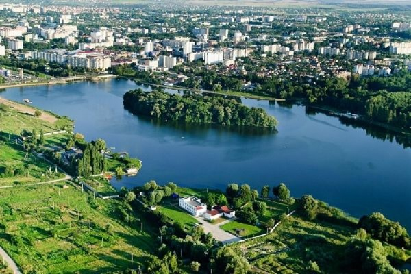

Місце народження: 16.11.2006 м.Київ
Освіта:
Технічний ліцей м.Києва
НТУУ КПІ м.Київ
Хобі:
Улюблені книги або фільми:
Хмельницький (до 1954 року — Проскурів) — місто в Україні, адміністративний центр Хмельницької області та Хмельницького району. Розташоване на берегах річки Південний Буг, у мальовничому історичному регіоні Поділля.
Ключові дати з історії міста:
у 1431 р. — перша письмова згадка про поселення (під назвою Плоскирів).
у 1795 р. — місто отримує статус повітового центру та назву Проскурів.
у 1937 р. — стає центром новоутвореної Кам'янець-Подільської області.
у 1954 р. — місто перейменовано на Хмельницький на честь гетьмана Богдана Хмельницького.
